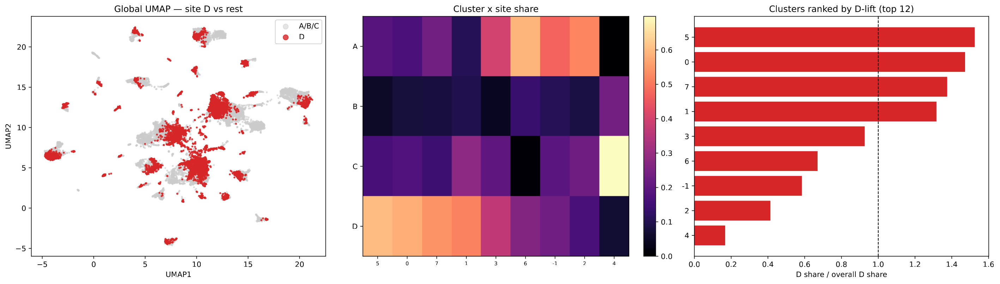
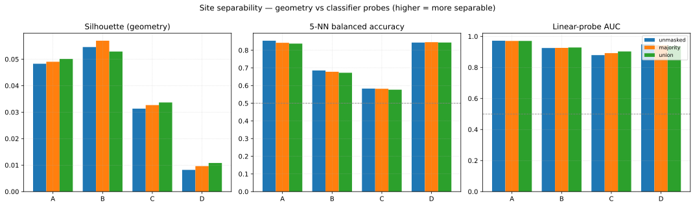
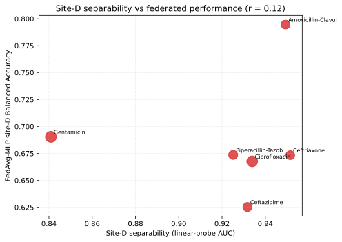

UMAP Diagnostics
Where do the species and site signals live in the pooled spectra, and how separable are the four DRIAMS sites? This diagnostic is the visual and quantitative companion to the Species Masking page and the Ceftriaxone 06b mask diagnostics: it maps the pooled spectra with UMAP, clusters them, and measures site separability before and after Species masking.
Note
An interactive version of the global embedding is hosted with these docs: open the global UMAP explorer (colour by site / species / resistance / cluster; highlight D vs rest or a named cluster; hover any point for its isolate provenance).
Objective
Show where the species and site information sits in a joint embedding of all six drugs.
Measure site separability under three different notions (geometry, local and linear predictability) and test whether Species masking changes it.
Link per-drug site-D separability to the federated models’ site-D performance.
Method
Data: all six drugs × four sites, all species, deduplicated by isolate
code→ 25,604 unique spectra (site shares A 33.4 %, B 9.1 %, C 18.2 %, D 39.3 %).Preprocessing: log1p transform + Standardize to zero mean.
Embedding: UMAP (n_neighbors 20, min_dist 0.25, seed 42) on a site-stratified subsample of 20,000 isolates; per-drug and site-D-only views use 8,000-spectrum subsamples.
Clusters: computed in PCA-50 space (not on the UMAP embedding) with HDBSCAN (minimum cluster size 200, KMeans fallback), then ranked by D-lift — the share of site D in a cluster divided by D’s overall share.
Separability probes (one-vs-rest per site): silhouette (geometry), 5-NN balanced accuracy, 5-NN AUC and linear-probe AUC; recomputed after zeroing the
majority(560 bins) andunion(966 bins) species masks.Join: per-drug site-D separability against the latest 08 run’s FedAvg-MLP site-D Balanced Accuracy.
Findings
Species structure dominates the embedding


Left: global UMAP, site D versus the rest. Middle: cluster × site share. Right: clusters ranked by D-lift.
Site D is thoroughly intermixed — there is no D island. The clusters that over-represent D the most are species-defined:
Cluster |
n |
% D |
D-lift |
R rate |
Dominant species |
|---|---|---|---|---|---|
5 |
5,639 |
60.0 % |
1.53 |
13.4 % |
E. coli 39 %, K. pneumoniae 36 % |
0 |
798 |
57.9 % |
1.47 |
6.4 % |
Proteus mirabilis 100 % |
7 |
2,954 |
54.1 % |
1.37 |
7.2 % |
Staphylococcus aureus 100 % |
1 |
226 |
51.8 % |
1.32 |
21.3 % |
Morganella morganii 100 % |
3 |
280 |
36.4 % |
0.93 |
21.5 % |
Serratia marcescens 98 % |
6 |
907 |
26.4 % |
0.67 |
56.3 % |
Staphylococcus epidermidis 95 % |
−1 (noise) |
7,727 |
23.0 % |
0.58 |
17.9 % |
mixed (E. coli 17 %, K. pneumoniae 8 %) |
2 |
953 |
16.3 % |
0.41 |
22.7 % |
Pseudomonas aeruginosa 100 % |
4 |
516 |
6.6 % |
0.17 |
10.0 % |
Enterococcus faecalis 93 % |

The same embedding coloured by the top-12 species: the geometry is organised by species, and the clusters that carry most of site D are the Enterobacteriaceae, Proteus and S. aureus islands — site D’s distinctness is largely its species ecology.
Within site D
Site D’s own spectrum (8,000 isolates) splits into seven species-dominated clusters plus 26 % noise, with very different resistance burdens:
Cluster |
n |
R rate |
Dominant species |
|---|---|---|---|
−1 (noise) |
2,067 |
10.3 % |
mixed (E. coli 28 %, S. aureus 12 %) |
0 |
474 |
6.7 % |
Proteus mirabilis 100 % |
1 |
184 |
10.7 % |
Pseudomonas aeruginosa 100 % |
2 |
124 |
20.2 % |
Morganella morganii 100 % |
3 |
3,281 |
10.1 % |
K. pneumoniae 47 %, E. coli 30 % |
4 |
124 |
18.6 % |
Citrobacter freundii 95 % |
5 |
264 |
36.3 % |
Staphylococcus epidermidis 86 % |
6 |
1,482 |
3.9 % |
Staphylococcus aureus 100 % |
Site separability: geometry vs classifier probes


Site separability under three notions — silhouette (geometry), 5-NN balanced accuracy and linear-probe AUC (predictability) — for the unmasked spectra, the majority mask (560 bins) and the union mask (966 bins).
Site |
Share |
Silhouette |
5-NN bal. acc |
5-NN AUC |
Linear AUC |
|---|---|---|---|---|---|
A |
33.4 % |
0.048 |
0.854 |
0.921 |
0.972 |
B |
9.1 % |
0.055 |
0.685 |
0.820 |
0.925 |
C |
18.2 % |
0.031 |
0.583 |
0.744 |
0.879 |
D |
39.3 % |
0.008 |
0.843 |
0.913 |
0.949 |
Reading the metrics. The three notions disagree for D, and both disagreements are instructive:
Silhouette is a geometry question — is the site one compact blob, separated from the rest? D is the largest and most heterogeneous site (seven species clusters spread through the embedding, sharing space with the same species from other sites), so it has the lowest silhouette. All sites are geometrically modest (≤ 0.055): in 6000-dimensional spectra, within-species variation dominates.
The probes ask a predictability question — can a classifier identify the site? Here A and D are the two separable sites (balanced accuracy 0.85 / 0.84, linear AUC 0.97 / 0.95), while B and C are far weaker (0.69 / 0.58). Raw accuracy would mislead: with the shares above, an all-“rest” predictor already scores 0.67 / 0.91 / 0.82 / 0.61, which is why balanced accuracy and AUC are used here.
So D is not a geometric island, but it is one of the most separable sites — the federated difficulty at D is a transfer cost, not isolation.
Masking changes nothing. After zeroing the majority (560) or union
(966) species-predictive bins, silhouette moves by ≤ 0.003, 5-NN balanced
accuracy by ≤ 0.016 and linear AUC by ≤ 0.024, in both directions — there is
no systematic effect on any site. This is the quantitative version of the
06b masking conclusion: the
site signal cannot be removed by removing the bins that predict it.
Separability does not predict federated performance


Per-drug site-D separability (linear-probe AUC) versus the FedAvg-MLP site-D Balanced Accuracy from each drug’s latest run (point size = number of D spectra). Pearson r = 0.12.
Drug |
Run |
n_D |
Linear AUC |
D BalAcc |
All BalAcc |
|---|---|---|---|---|---|
Ciprofloxacin |
04-Run |
9,817 |
0.934 |
0.668 |
0.702 |
Gentamicin |
01-Run |
10,026 |
0.841 |
0.690 |
0.768 |
Amoxicillin-Clavulanic acid |
02-Run |
6,596 |
0.949 |
0.795 |
0.816 |
Piperacillin-Tazobactam |
01-Run |
6,857 |
0.925 |
0.674 |
0.687 |
Ceftriaxone |
07-Run |
6,618 |
0.952 |
0.673 |
0.722 |
Ceftazidime |
03-Run |
6,889 |
0.932 |
0.625 |
0.673 |
D separability is high for every drug (linear AUC 0.84–0.95), but it does not track the federated models’ site-D accuracy: r = 0.12 (Pearson; −0.09 Spearman, −0.06 for the 5-NN AUC). How distinguishable a site is in feature space says little about how well federation transfers to it — the Domain shift cost is not a simple function of separability.
Interactive Explorer
The hosted global UMAP explorer shows the 20,000-isolate embedding with:
Color by: Site · Species · Resistance · Cluster;
Highlight: D vs rest, single sites, or a D-dominant cluster (each labelled with its D share, e.g. “Cluster 5 (60 % D)”);
Hover: isolate
code, species, site, cluster, drug coverage and R fraction; legend clicks toggle categories.
Per-drug explorers (one per drug) and a site-D-only explorer exist in the results directory as local artifacts (5–16 MB each); they are not shipped with the docs.
Caveats
UMAP is a visualisation: it preserves neighbourhood relations, not global distances; axis units are meaningless.
Clusters are computed in PCA space, not on the embedding; HDBSCAN results depend on its density parameters and on the library version (the Gentamicin per-drug view needed the KMeans fallback because HDBSCAN noise exceeded 50 %). Treat cluster counts as approximate.
Subsampling: 20,000 isolates globally, 8,000 per drug and for site D; site-stratified, so D contributes the most points (39 %).
Separability probes use 2,500 (silhouette) and 5,000 (classifiers) sub-samples with 5-fold cross-validation; balanced accuracy and AUC handle the one-vs-rest class imbalance, silhouette does not (geometry only).
The FL join has six points — the correlation is illustrative, not statistical evidence.
Masks:
majority(560 bins) andunion(966 bins) fromSpecies-Masking/shared_masks/(all-six-drug pooling); thepersitemasks exist but are not used in the separability comparison.Reproducibility: refreshed 2026-10-10; cluster compositions and separability outputs were byte-identical to the 2026-09-29 run.
Files and Notebooks
UMAP-Diagnostic-Interactive.ipynb — this analysis (produces the interactive HTMLs and the static figures); UMAP-Diagnostic.ipynb is the earlier static predecessor.
UMAP-Diagnostic-Interactive/results/— cluster-composition CSVs (global, site-D, per drug),site_separability.csv,siteD_separability_per_drug.csv,siteD_separability_vs_FL.csv,siteD_cluster_overview.pdfand thedoc_*figure exports.Species-Masking/shared_masks/— the species masks and RF models used.